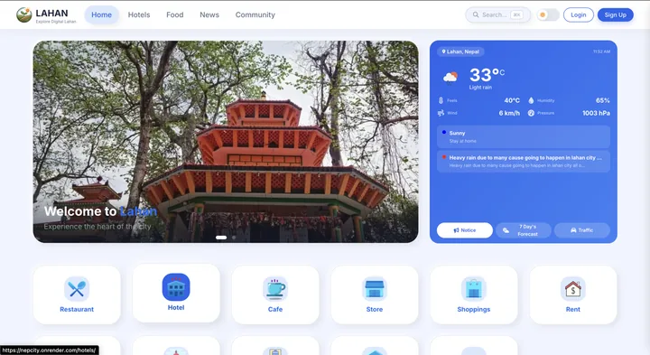

Full-stack platforms, computer-vision prototypes and AI experiments by Abhishek Thakur — each one taken end to end, from the first database schema to a deployed product.
05
Shipped projects
21
Apps in one ecosystem
03
Live in production
15
Public repositories

01 / Django · Python · PostgreSQL · Docker
LAHAN Hub
Full-Stack Digital City Ecosystem
My largest full-stack project: 21 interconnected applications
bringing local services, businesses, community features,
information and everyday utilities into one platform for a
city like Lahan, Nepal.
An assistive technology project helping visually impaired
users understand their surroundings through object detection,
distance sensing and clear voice feedback.
These builds stay in the open on my GitHub profile, and several are written up step by step in the articles section. If a project here resembles something you want built, my development services cover the same stack.
Have a project in mind?
Let’s turn an idea into a working product.
Tell me what you are building and I’ll help you choose a clear, maintainable path from idea to launch.